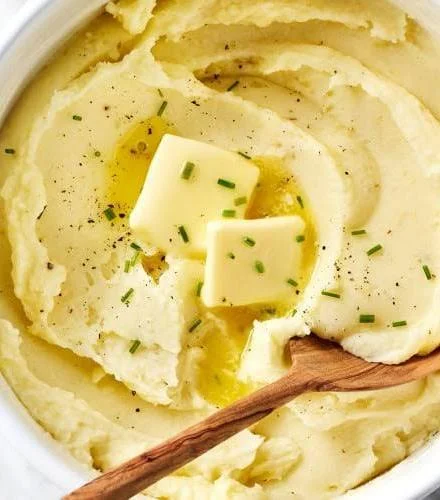

Home
Mashed Potatoes

Mashed potato or mashed potatoes, colloquially known as mash, is a dish made by mashing boiled or steamed
potatoes, usually with added milk, butter, salt, and pepper. It is generally served as a side dish to meat or
vegetables. Roughly mashed potatoes are sometimes called smashed potatoes.
Ingredients
- 4 medium potatoes
- 2 tbsp butter
- 1/2 cup milk
- Salt (to taste)
- Black pepper (to taste)
Steps
- Peel and boil potatoes until soft.
- Drain water and mash the potatoes.
- Add butter and mix well.
- Gradually add milk until creamy.
- Season with salt and pepper.
- Serve warm.